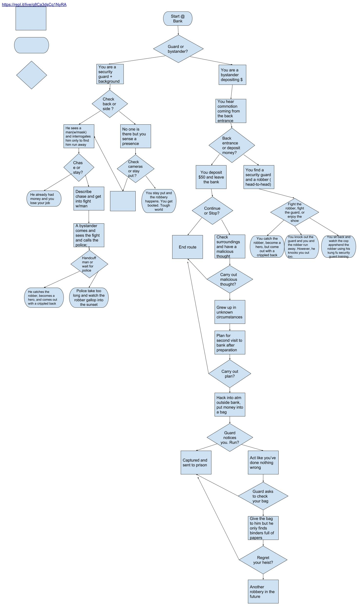

Fish Frenzy is a single player survival game in the perspective of a cute, orange fish. Your goal is to grow big by eating the blue fishes and the algae for one growth point, and to win the game you must get 10 growth points. However, getting touched by a bigger fish results in minus points. I implemented a point scoring system where if the fish touches its food it gains a point, but if it's touches by a predator it loses points. The game gets more difficult once the player reaches 7 points because the shark comes in to chase the fish. The game ends when the player gets to negative growth points (meaning he/she died) by other fish and is notified by the the loss screen.
I made this game because I imagined a game where a sprite could eat other sprites and get eaten by others too and it just happened to take place in a oceanic environment. Two successful points from the development of this game are that I was able to utilize the "point to mousepointer" to enable my sprite to move in the direction of my mouse and that I was able to create an "animated" home screen. Two obstacles I encountered were having the home screen fish appear uniformly because they were located in different spots and having the point system change when the orange fish touched a predator. To overcome these, I had to put the fishes in the same location and have them go at different times in the home screen and for the point system, I just had to put the point system code onto the predator rather than the orange fish. If I had more time or resources, I would have made more types of animals and maybe even a rare clam at the bottom for instant victory to make it more entertaining.
This code is an algorithm because it is a step by step process consisting of two forever loops and two conditionals. Once the play button is clicked which broadcasts "game", if growth points is greater than 6.5 at that moment, it will go to x position -220 and any y position between -180 and 180. It will then show the shark and forever move toward the mouse at a 2.5 step rate. If the shark is touching the cute fish, then it will hide. For the more blocks, I noticed I needed to change the growth constantly and hide the sprite right after so I made it into its own blocks.
Bank Story is about the user, who is at a bank, and chooses to be either a bystander and a security. The user can start, stop, or attempt to stop a robbery based on the choices they make at the bank.
My program was a process using interactions and increments for it to function. An increment in my program is that every choice you make through an inputted letter causes you to call another defined function, thus creating a system of linked functions. An interation in my code is that when an input is asked and you don't satisfy the condition with your input, you are told to reenter another letter until you satisfy a condition. A difficulty I encountered was when certain phrases appeared on the same line as the previous one, making the text appear unorganized and convuluted. I resolved this by adding line breaks to make it more readable.
Organization scenes in my story are procedural abstractions because they give the word or the phrase to you but one doesn't know how it works. A benefit of this is that the name tells what the function does without being detailed, so I can know what it does by just the name.
I really liked Andy's story because it seemed very organized and logical to me, qualities that I enjoy in games. It revoled around subjects like math and school, so I also was able to relate to the content.